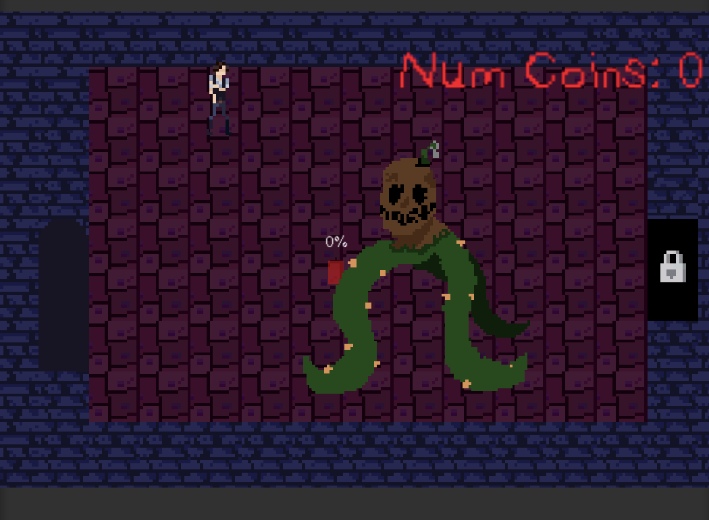
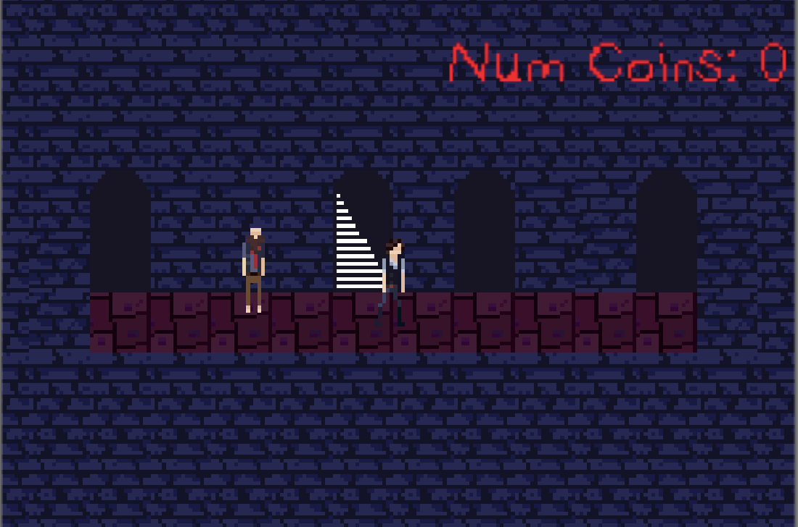
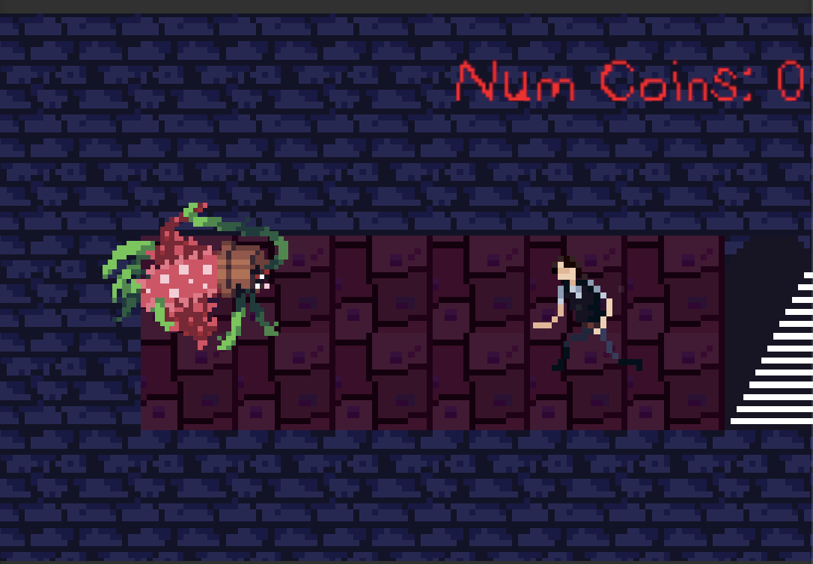

|  |  |  |
Project Monster Mantion, later renamed to purgatorium, was my second project working with Lost Annimation. It was created as an entry into the B.P.A. (Business Profesionals of America) hosted by Software Engineering competition in 2020. Unfortunately this project was not showcased at the national competition, due to the Covid-19 outbreak.